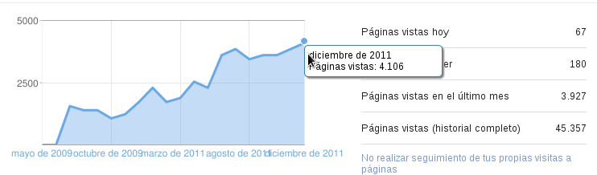

Feliz año 2012
Posted on lun 09 enero 2012 in Anuncios • 2 min read
Les deseo a todos un Feliz año 2012 y que todas sus metas se cumplan. Este correo debí enviarlo los primeros días del año pero por motivos de viaje fue hasta ahorita que pude sentarme a escribir.
Entre las metas de este blog fue el escribir para el año 2011 por lo menos más de 36 artículos que fue logrado el año 2009, en el 2011 se publicaron 49 artículos que da un promedio por mes de 4 artículos.
Adicional a esto en el mes de Diciembre se logró superar la cantidad de visitas mensuales del blog de 3800 que fue el máximo a 4160 para ese mes según lo muestra la siguiente figura.

La distribución por países de las visitas al blog en toda su vida es la siguiente:
-
España 11.440
-
Venezuela 6.697
-
México 5.927
-
Argentina 4.261
-
Estados Unidos 3.230
-
Chile 2.799
-
Colombia 2.042
-
Perú 757
-
Alemania 674
-
Países Bajos 509
Muchas gracias a todos por leer el blog.
Para este año espero terminar con los artículos sobre PyQt, PyGTK, gráficos con python, android con python y seguir con artículos sobre empaquetado para Python y Debian, de administración de servidores, mercurial, monitoreo entre otros temas. Posiblemente empezar a escribir sobre programación de Python con wxwidget.
Es más, siguiendo el ejemplo de Blogeros como el sitio Orsai, dejo abierta la posibilidad de quienes leen este blog propongan temas, claro sobre software Libre y Linux.
Por lo pronto aspiro que este año pueda escribir más de 50 artículos. Espero tener el tiempo y los temas preparados para lograrlo.
¡Haz tu donativo! Si te gustó el artículo puedes realizar un donativo con Bitcoin (BTC) usando la billetera digital de tu preferencia a la siguiente dirección: 17MtNybhdkA9GV3UNS6BTwPcuhjXoPrSzV
O Escaneando el código QR desde la billetera: